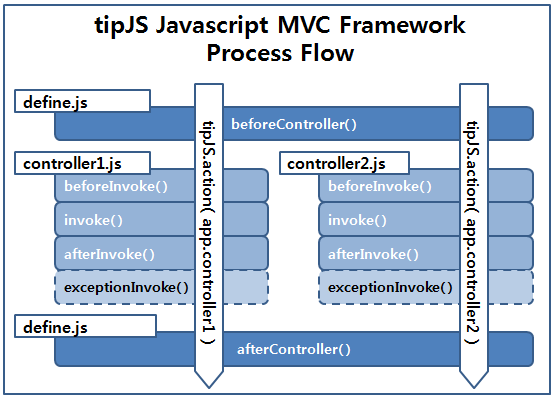

개요
소개
tipJS JavaScript MVC Framework 는 작고 Simple하며 강력한 JavaScript MVC Framework 입니다.
당신은 tipJS 를 이용해 복잡한 구조의 Web Application 을 Controller로 제어되는 Model과 ViewModel, HTMLTemplate로 간단하게 구현할 수 있습니다. tipJS JavaScript MVC Framework로 당신의 Web Application의 개발과 Maintenance 효율을 월등히 높힐 수 있을 것입니다.
다운로드
v2.1.0
v1.4.3 (지원 중단)
특징
- 복잡한 JavaScript Application을 MVC Pattern 형태로 구현할 수 있습니다.
- Back-end 개발자를 위한 최적의 JavaScript MVC Framework 입니다.
- AOP(Aspect-Oriented Programming) 가능한 JavaScript MVC Framework 입니다.
- Router 기능을 제공합니다.
- HTML Template 기능을 지원하여 사용자 View 를 간단히 생성할 수 있습니다.(version 1.10 부터 지원)
- 다양한 Browser와 호환됩니다.(IE 7/8/9, Chrome, Firefox, Safari, etc…)
- 독립된 작동을 위해 JavaScript ECMAScript Code 로 개발되어 별도의 외부 Library도 필요로 하지 않습니다.
- 다양한 외부 JavaScript Library 와 호환됩니다.(JQuery, ExtJS, etc…)
- Browser Cache를 간단하게 제어할 수 있습니다.
- Model과 ViewModel 만이 아닌 다양한 Timing에서 당신의 Application을 제어할 수 있습니다.
- tipJS JavaScript MVC Framework는 최소한의 Rule에 의해 작동하므로 개발형식이 자유롭습니다.
- 지정된 작동구간의 benchmark 기능을 지원합니다.
- 다국어 지원(국제화/i18n) 기능을 제공합니다.
- etc…
구조
라이센스
MIT와 GPL Version2 듀얼 라이선스를 가지고 있습니다.
시작하기
Folder Structure는 아래의 구조를 권장합니다.
/tipJS/tipJS.min.js.js
/examples/helloWorld/index.html
/examples/helloWorld/app.js
/examples/helloWorld/controllers/hello.js
html file 의 tipJS.min.js file 경로를 설정합니다.
<html>
<head>
<script src="/tipJS/tipJS.min.js"></script>
<script src="/examples/helloWorld/app.js"></script>
<body>
<div id="contents"></div>
<input type="button" value="click me"
onclick="tipJS.action.hello('tipJS.com')"/>
</body>
</html>
app.js 에서 controller file 을 설정합니다.
// app.js
tipJS.app({
controllers : [
"hello.js"
]
});
window.onload = function(){
tipJS.loadApp(); // application 시작
};
controller file 에 처리내용을 작성합니다.
// controllers/hello.js
tipJS.controller("hello", {
invoke : function(params){
document.getElementById('contents').innerHTML
= "Hello World!! from " + params;
}
});
앱(App) 설정
Essential
tipJS 의 설정은 tipJS.app method 에 의해 이루어집니다. 모든 설정값에는 기본값(default value)가 존재하고, 기본값의 변경을 위해서는 thpJS.app method 의 인수 객체에 설정값을 지정하면 됩니다.
tipJS.app({
controllers:[
"someController1.js",
"someController2.js"
],
models:[
"someModel1.js"
"someModel2.js"
],
views:[
"someView1.js",
"someView2.js"
],
onLoad:function(args){
...
},
...
});
window.onload = function() {
tipJS.loadApp();
}
아래는 tipJS.app method에서 설정할 수 있는 속성에 대한 설명입니다.
- appPath
tipJS 의 application 실행폴더를 지정합니다. 이 옵션은 controllers, models, views, lang 폴더등의 상위폴더를 지정합니다. 기본값은 "."(tipJS를 포함한 html의 현재경로) 으로 상대/절대경로로 재설정 가능합니다.
- controllers
array type으로 Controller file들을 정의합니다.
- models
array type으로 Model file들을 정의합니다.
- views
array type으로 View file들을 정의합니다.
- onLoad
function type으로 등록된 onLoad method 는 application 이 tipJS.loadApp method 로 load된 직후에 단 한번 실행되는 method입니다. argument로 tipJS.loadApp method 호출시 지정한 argument 인 parameter 를 사용할 수 있습니다.
// tipJS
tipJS.app({
...
onLoad:function(params){
tipJS.debug(params.param1); // result is "some value"
},
...
});
// JQuery
$(document).ready(function(e){
var param = {param1:"some value"}
tipJS.loadApp(param);
});
- beforeController
function type으로 등록된 beforeController method 는 AOP의 개념으로 application 내에서 어떤 Controller 를 호출하더라도 공통적으로 실행되는 method입니다.이 method 는 Controller 의 그 어떤 method보다 우선적으로 실행됩니다. argument로 Controller를 호출하는 tipJS.action method의 두번째 argument 인 parameter를 사용할 수 있습니다. Controller 와 동일한 method들을 사용할 수 있습니다.
tipJS.app({
...
onLoad:function(params){
tipJS.action("someController", params);
},
beforeController:function(params){
console.log(params.param1); // result is "some value"
}
...
});
- afterController
function type으로 등록된 afterController method 는 application 내에서 어떤 Controller 를 호출하더라도 공통적으로 실행되는 method입니다.이 method 는 Controller 가 실행종료된 후 실행됩니다. argument로 Controller를 호출하는 tipJS.action method의 두번째 argument 인 parameter를 사용할 수 있습니다. Controller 와 동일한 method들을 사용할 수 있습니다.
- noCache
Browser cache 를 boolean type으로 설정할 수 있으며, true일 경우 noCacheAuto, noCacheVersion, noCacheParam 속성과 연동되어 version value 가 변경 될때마다 JavaScript file을 다시 load 하게합니다.(default:false)
- noCacheVersion
Browser cache 제어를 위한 버젼 정보를 설정합니다.(default:"1.000")
- noCacheAuto
true로 설정된 경우 noCacheVersion option의 value와는 상관없이 version을 랜덤하게 출력하여 Browser cache를 무효하게 합니다.(default:false)
- noCacheParam
Browser cache 제어를 위한 parameter name을 설정합니다.(default:"noCacheVersion")
Router
tipJS JavaScript MVC Framework 는 tipJS.app method 의 설정을 통해 Router 기능을 제공합니다.
(이 기능은 IE7 이하에서 작동하지 않습니다.)
tipJS.app({
controllers:[
"defaultCtrler.js",
"page1Ctrler.js",
"page2Ctrler.js",
"noPageCtrler.js"
],
routes:[
// url hash가 존재하지 않을때 defaultCtrler가 동작합니다.
// http://domain.com
{
url:"/",
controller:"defaultCtrler"
},
// url hash가 '#/page1' 일때 page1Ctrler가 동작합니다.
// http://domain.com/#/page1
{
url:"#/page1",
controller:"page1Ctrler"
},
// url hash가 '#/page2' 일때 page2Ctrler가 동작합니다.
// http://domain.com/#/page2
{
url:"#/page2",
controller:"page2Ctrler"
},
// 라우터에 등록되지 않은 url hash 일때 noPageCtrler가 동작합니다.
// http://domain.com/#/pageXX
{
url:"!",
controller:"noPageCtrler"
}
]
...
});
Cache Control
tipJS JavaScript MVC Framework 는 tipJS.app method 의 설정을 통해 Browser cache를 control합니다.
(이 기능은 IE7 이하에서 작동하지 않습니다.)
tipJS.app({
noCache:false,
noCacheVersion:"1.000",
noCacheAuto:true,
noCacheParam:"noCacheVersion",
...
});
noCache attribute가 false일 경우 tipJS 는 아래와 같이 JavaScript file 을 읽어들입니다.
<script type="text/javascript" src="./controllers/some.js"></script>
그러나 noCache attribute 가 true일 경우 아래와 같은 결과와 같습니다.
<script type="text/javascript" src="./controllers/some.js?noCacheVersion=1.000"></script>
noCache attribute 가 true 그리고 noCacheAuto attribute 가 true일 경우 noCacheVersion 의 parameter 값이 random 하게 생성되어 항상 새로 JavaScript file 을 load 하게 됩니다.
<script type="text/javascript" src="./controllers/some.js?noCacheVersion=0.5478912648"></script>
만약 당신의 application이 갱신되었다면 noCacheVersion 속성의 값을 변경하거나 noCacheAuto 속성의 값을 true 로 하는것 만으로 Browser는 cache 처리없이 최신의 JavaScript file을 load하게 될 것입니다.
Controller
Controller의 호출은 아래의 방식으로 이루어 집니다.
- tipJS.action("controller name", parameter)
- tipJS.action.controllerName(parameter)
tipJS.controller method 에서 정의된 Controller 처리가 실행되기 전에 tipJS.app method에서 정의한 beforeController method 가 실행되며 Controller 처리가 모두 완료된 후에 define.js에서 정의한 afterController method가 실행됩니다.

Controller Tutorial [src] [view]
tipJS.action method의 두번째 argument 는 tipJS.app method에서 정의한 beforeController method, afterController method 와 호출된 Controller의 beforeInvoke, invoke, afterInvoke, exceptionInvoke method 에서 input argument로 사용 가능합니다.
beforeController / afterController method 안에서 this.controllerName 속성으로 현재 처리중인 controller 명이 참조 가능합니다.
tipJS.app({
...
onLoad:function(params){
// call Controller
tipJS.action("someController", "someValue");
// or
tipJS.action.someController("someValue");
},
beforeController:function(params){
console.log(params); // result is "someValue"
console.log(this.controllerName); // result is "someController"
},
afterController:function(params){
console.log(params); // result is "someValue"
console.log(this.controllerName); // result is "someController"
},
...
});
// controllers/someController.js
tipJS.controller("someController", {
beforeInvoke:function(params){
console.log(params); // result is "someValue"
},
invoke:function(params){
console.log(params); // result is "someValue"
},
afterInvoke:function(params){
console.log(params); // result is "someValue"
},
exceptionInvoke:function(exception, params){
console.log(params); // result is "someValue"
}
});
tipJS.action method 의 호출 위치는 tipJS.loadApp method 호출 이후 자유롭습니다.
Controller 는 보통 아래와 같은 구성으로 이루어 집니다.
// controllers/someController.js
tipJS.controller("someController", {
beforeInvoke:function(params){
....
},
invoke:function(params){
console.log("invoke Start");
// load Application Model
var initModel = this.getModel("initModel");
// load Application ViewModel
var initView = this.getView("initView");
initView.drawBody(bodyHtml);
console.log("invoke Done");
},
afterInvoke:function(params){
....
},
exceptionInvoke:function(exception, params){
alert(exception);
}
});
tipJS.app({
...
onLoad:function(params){
tipJS.action("someController", params);
},
...
});
Controller는 기본 4가지의 method 가 조건에 의해 실행됩니다.
기본적으로 Controller 는 tipJS Javascript MVC Framework에 의해 beforeInvoke, invoke, afterInvoke method 의 순서로 자동호출되며 exceptionInvoke method 는 Controller에 exceptionInvoke method가 정의되어 있고 Controller 실행중 exception 이 발생할 경우에만 호출됩니다.
물론 Controller 내부에서 사용자가 작성한 method 를 호출하는 것도 가능합니다.
// controllers/someController.js
tipJS.controller("someController", {
...
invoke:function(params){
this.userFn();
},
userFn:function(){
...
Some Process..
...
}
});
Controller 선언시 async 속성을 true로 설정하면 Controller 호출시 비동기 모드로 작동합니다. delay 속성을 1/1000 초단위 로 지정하여 비동기 지연시간을 지정할 수 있습니다.
// controllers/someController.js
tipJS.controller("someController", {
async:true, // AnSynchronized Controller
delay:500, // 0.5 sec.
...
invoke:function(params){
this.userFn();
},
userFn:function(){
...
Some Process..
...
}
});
아래는 Controller 에 설정된 속성에 대한 설명입니다.(기본 4 method 이외)
- async
Controller 동작을 비동기모드로 실행할것인지 설정합니다.(true – 비동기모드)
- delay
Controller 비동기모드 시간을 1/1000 초 단위로 지정합니다.(defalut:15)
- getModel(ModelName)
tipJS.model method에서 정의한 Application Model Object 를 load 합니다.
- getView(ViewName)
tipJS.view method에서 정의한 Application ViewModel Object 를 load 합니다.
- render(options)
HTML Template 항목 참고
- getById(id)
document.getElementById 와 동일합니다.
- getByName(name)
document.getElementsByName 와 동일합니다.
- getByTag(tagName)
document.getElementsByTagName 와 동일합니다.
Model
tipJS JavaScript MVC Framework 서 Model Object 는 필요에 따라 구현하시기 바랍니다.
Model 에서는 같은 Layer인 다른 Model을 load할 수 있습니다.
Model 정의시 Framework에 의해 자동으로 정의되는 method는 다음과 같습니다.
- __init
__init 메서드는 선언후 해당 Model 이 getModel 메서드에 의해 호출되어 생성되는 시점에서 단 한번 실행되는 메서드 입니다.
- getModel(modelName)
tipJS.model method에서 정의한 Application Model을 반환합니다.
- getById(id)
document.getElementById 와 동일합니다.
- getByName(name)
document.getElementsByName 와 동일합니다.
- getByTag(tagName)
document.getElementsByTagName 와 동일합니다.
자동으로 정의되는 method가 필요치 않을 경우 VO(Value Object) Model 을 사용하시기 바랍니다. 자세한 설명은 VO(Value Object) Model 항목을 참고하시기 바랍니다.
Model Tutorial [src] [view]
// models/someModel.js
tipJS.model("someModel", {
__init:function(){
// Object 생성시 framework에 의해 한번만 실행되고 소멸한다.
...
},
properties:...
someMethods:function(){
var someModel2 = this.getModel("someModel2");
... some process ...
}
});
동기 모델 - Syncronous Model
tipJS JavaScript MVC Framework는 Model의 동기화 기능을 제공합니다. Model 의 동기화 기능이란 하나의 생성된 Model Object가 소멸되지 않고 변경되어지는 값을 가진채 유지되는 것을 말합니다.
ModelSync Tutorial [src] [view]
// models/someModel.js
tipJS.model("someModel", {
__init:function(){
// Object 생성시 framework에 의해 한번만 실행되고 소멸한다.
...
},
someValue:"foo"
});
// controller One
tipJS.controller("someController1", {
...
invoke:function(params){
// load Application Model(normal)
var someModel = this.getModel("someModel");
console.log(someModel.someValue); // "foo"
someModel.someValue = "bar";
// load Application Model(synchronized)
var someModelSync = this.getModel("someModel", true);
console.log(someModelSync.someValue); // "foo"
someModelSync.someValue = "bar";
},
...
});
// controller Two
tipJS.controller("someController2", {
...
invoke:function(params){
// load Application Model(normal)
var someModel = this.getModel("someModel");
console.log(someModel.someValue); // "foo"
// load Application Model(synchronized)
var someModelSync = this.getModel("someModel", true);
console.log(someModelSync.someValue); // "bar"
},
...
});
getModel method 의 두번째 인자에 true를 설정하였을 경우 사용 할 수 있습니다.
VO(Value Object) Model
tipJS JavaScript MVC Framework 는 VO(Value Object) Model 기능을 제공합니다.
VO Model 은 일반 model 선언시 자동으로 추가되는 속성/method 를 추가하지 않습니다. 사용자가 선언한 내용만이 반환되는 model입니다.
VO Model 을 사용하기 위해 별도의 설정작업은 필요하지 않습니다. Model 선언시 Model Name 값의 마지막이 “VO”로 선언되어 있으면 해당 Model은 VO Model로 동작합니다.
ModelVO Tutorial [src] [view]
// models/modelVO.js
tipJS.model("modelVO", {
__init:function(){
// Object 생성시 framework에 의해 한번만 실행되고 소멸한다.
...
},
value1 : "123",
value2 : "abcd"
});
// controllers/someController.js
tipJS.controller("someController", {
...
invoke:function(params){
console.dir(this.loadModel("someModel"));
console.dir(this.loadModel("modelVO"));
},
...
});
Model 의 extension(Inheritance)
tipJS JavaScript MVC Framework는 Model의 확장 기능을 제공합니다.
ModelExtend Tutorial [src] [view]
tipJS.model("modelParent", {
parent1 : "modelParent",
parentFn : function() {
console.log(this.parent1); // modelParent
}
});
tipJS.model("modelChild",{
__extend : "modelParent",
child1 : "modelChild",
childFn : function() {
console.log(this.child1); // modelChild
}
});
// controllers/someController.js
tipJS.controller("someController", {
...
invoke : function() {
var modelChild = this.getModel("modelChild");
modelChild.parentFn(); // modelParent
modelChild.childFn(); // modelChild
},
...
});
View Model
tipJS JavaScript MVC Framework 서 ViewModel Object 는 필요에 따라 구현하시기 바랍니다.
ViewModel 은 HTML Template 기능을 Controller로 부터 분리하여 수행하기 위한 Model 입니다. ViewModel 에서는 같은 Layer인 다른 ViewModel을 load할 수 있습니다.
ViewModel 정의시 Framework에 의해 자동으로 정의되는 method는 다음과 같습니다.
- __init
__init 메서드는 선언후 해당 ViewModel 이 getView 메서드에 의해 호출되어 생성되는 시점에서 단 한번 실행되는 메서드 입니다.
- getView(viewName)
tipJS.model method에서 정의한 Application ViewModel을 반환합니다.
- getById(id)
document.getElementById 와 동일합니다.
- getByName(name)
document.getElementsByName 와 동일합니다.
- getByTag(tagName)
document.getElementsByTagName 와 동일합니다.
- render(options)
HTML Template 항목을 참고합니다.
View(HTML Template) Tutorial [src] [view]
// views/someView.js
tipJS.view("someView", {
properties:...
methods:function(){
...
}
});
// controllers/someController.js
tipJS.controller("someController", {
...
invoke : function() {
var modelChild = this.getModel("modelChild");
modelChild.parentFn(); // modelParent
modelChild.childFn(); // modelChild
},
...
});
ViewModel extension(Inheritance)
tipJS JavaScript MVC Framework는 ViewModel의 확장 기능을 제공합니다.
ViewModel Extend Tutorial [src] [view]
tipJS.view("viewParent", {
parent1 : "viewParent",
parentFn : function() {
console.log(this.parent1); // viewParent
}
});
tipJS.view("viewChild",{
__extend : "viewParent",
child1 : "viewChild",
childFn : function() {
console.log(this.child1); // viewChild
}
});
// controllers/someController.js
tipJS.controller("someController", {
...
invoke : function() {
var viewChild = this.getView("viewChild");
viewChild.parentFn(); // viewParent
viewChild.childFn(); // viewChild
},
...
});
HTML Template
tipJS JavaScript MVC Framework는 Model과 View의 분리를 위한 HTML 형식의 Template 기능을 제공합니다.
render method 는 HTML Template 에 data를 맵핑한후 renderTo 속성에 id 값이 지정되어 있으면 해당 element에 HTML Template 의 내용을 출력한 후 data가 mapping된 html 을 반환합니다. 한번 읽어들인 HTML template file은 tipJS에 의해 cache 처리됩니다.
만약 template의 cache 처리를 원하지 않을경우에는 tipJS.app method 의 templateCache 속성값을 false 로 설정하시기 바랍니다. (default:true)
renderTo 속성은 생략 가능하며 render method는 항상 data가 mapping된 html 을 반환합니다.
<-- index.html -->
<html>
<head>
<script type="text/javascript" src="/tipJS/tipJS-MVC-x.xx.js"></script>
<script>
window.onload = function(){
tipJS.loadApp(["someApplication"]);
};
</script>
<body>
<div id="target_id"></div>
</body>
</html>
<-- someTpl.tpl -->
<h1>
<@= data.someString @>
</h1>
<ul>
<@ for(var i=0; i<data.someArray.length; i++) { @>
<li> <@= data.someArray[i] @> </li>
<@ } @>
</ul>
// controllers/someController.js
tipJS.controller("someController", {
invoke:function(params){
var _templateConfig = {
url:"/templates/someTemplate.tpl",
renderTo:"target_id",
data: {
someString:"some String " + params,
someArray:["some1","some2","some3"]
}
};
var returnHTML = this.render(_templateConfig); // return html
}
});
ViewModel(HTML Template) Tutorial [src] [view]
<-- someTpl.tpl -->
<div>
<ul>
<@ for(var i=0; i<data.length; i++) { @>
<@ if (i != 0) {@><li class="<@=( (i==2) ? "foo":"bar" )@>"><@= data[i] @></li>
<@}else{@><div class="<@=( (i==2) ? "foo":"bar" )@>"><@= data[i] @></div><@}@>
<@ } @>
</ul>
</div>
ViewExtend(HTML Template) Tutorial [src] [view]
HTML Template 에서의 값의 출력은 <@= value @> 사이에서 이루어 지며, 루프등의 제어는 <@ for(…) @> 사이에서 이루어집니다. 종료태그 @> 앞에 종료문자(;)를 넣을 경우 에러를 발생하니 주의하십시오.
render method의 argument인 설정 Object의 속성은 다음과 같습니다.
- url
HTML Template file의 url를 정의합니다. file의 extention name에 대한 제한은 없습니다.
- renderTo
HTML Template의 내용이 data속성에 의해 mapping 된 후에 반환되는 html이 출력 될 html요소의 id를 정의합니다.(생략가능)
- data
HTML Template 에서 정의한 data변수에 mapping될 data를 정의합니다.
단순히 html string 과 data object 를 통해 렌더링된 html 을 받을 수도 있습니다.
tipJS.controller("someController", {
invoke:function(params){
var htmlString = "<div><@= data.foo @></div>";
var data = {
foo:"foo"
};
var returnHTML = this.render(htmlString, data); // return html
}
});
HTML Template file 의 논리적 분할
하나의 물리적 file 을 논리적으로 분할하여 사용하는 기능에 대해 설명합니다.
논리 id 명은 tplId 속성에 지정하여 사용해야 하며 template file 의 [[#id]] 와 matching 됩니다.
[[#template01]] <!-- id : "template01" -->
<ul>
<li><@= data.foo @></li>
</ul>
[[#template02]] <!-- id : "template02" -->
<span><@= data.bar @></span>
// someController1.js
tipJS.controller("someController1", {
invoke : function(params){
var _templateConfig = {
url:"/templates/someTemplate.tpl",
renderTo:"target_id",
tplId:"template01", // id : "template01"
data:{
foo:"foo"
}
};
var returnHTML = this.render(_templateConfig); // return template01 html
}
});
// someController2.js
tipJS.controller("someController2", {
invoke : function(params){
var _templateConfig = {
url:"/templates/someTemplate.tpl",
renderTo:"target_id",
tplId:"template02", // id : "template02"
data:{
bar:"bar"
}
};
var returnHTML = this.render(_templateConfig); // return template02 html
}
});
AOP
여기서는 tipJS JavaScript MVC Framework 를 통한 AOP(Aspect-Oriented Programming) 기능을 설명합니다.
AOP 를 활성화 하기 위해서 tipJS.app method 에 interceptors 속성을 추가합니다.
tipJS.app({
...
interceptors:[
"interceptor.js"
]
...
});
application 폴더 하위에 interceptors 폴더를 작성하고 interceptor JS 파일을 작성합니다.
interceptor 의 등록은 tipJS.interceptor method를 사용합니다.
tipJS.interceptor("interceptor", {
target:"controllers",
before:function(){
console.log("interceptor.before : " + this.msg);
},
after:[
function(){
console.log("interceptor.after #1 : " + this.msg);
},
function(){
console.log("interceptor.after #2 : " + this.msg);
}
]
});
target 속성은 적용할 범위(point cut)를 의미합니다.
예를 들어 Model 전체에 적용할 때는 models 를 (ex:”models”),
특정 Model을 지정하고 싶을때는 Model 명을 (ex:”models.modelName” or “models.modelNam*”),
특정 Model의 특정 method 를 지정하고 싶을때는 method 명을(ex:”models.modelName.getName” or “models.modelName.get*”) 작성합니다.
target 속성은 배열타입으로 복수개 지정 가능합니다.
상기 before, after 안의 this context는 target 의 context를 의미합니다.
before, after 또한 배열타입으로 복수개 지정 가능합니다.
아래와 같은 Controller 가 있다고 가정한다면
tipJS.controller("someCtrler", {
msg:"some Message",
invoke:function(params){
console.log( this.msg ); // "some Message"
}
});
상기의 Controller 의 실행결과는 아래와 같이 console에 출력됩니다.
interceptor.before : some Message
some Message
interceptor.after #1 : some Message
interceptor.after #2 : some Message
실행 우선순위 지정
interceptor 의 order 속성값을 지정하여 interceptor들간의 실행 우선순위를 지정할수 있습니다.
tipJS.controller("someCtrler", {
msg:"some Message",
invoke:function(params){
console.log( this.msg ); // "some Message"
}
});
tipJS.interceptor("interceptor1", {
order:1,
target:"controllers",
before:function(){
console.log("interceptor.before #1-1 : " + this.msg);
},
after:[
function(){
console.log("interceptor.after #1-1 : " + this.msg);
},
function(){
console.log("interceptor.after #1-2 : " + this.msg);
}
]
});
tipJS.interceptor("interceptor2", {
order:2,
target:"controllers",
before:function(){
console.log("interceptor.before #2-1 : " + this.msg);
},
after:[
function(){
console.log("interceptor.after #2-1 : " + this.msg);
},
function(){
console.log("interceptor.after #2-2 : " + this.msg);
}
]
});
상기 예의 실행결과는 아래와 같습니다.
interceptor.before #1-1 : some Message
interceptor.before #2-1 : some Message
some Message
interceptor.after #1-1 : some Message
interceptor.after #1-2 : some Message
interceptor.after #2-1 : some Message
interceptor.after #2-2 : some Message
ETC
Debug Mode
tipJS JavaScript MVC Framework는 당신의 debug 작업을 위해 tipJS.debug method 를 제공합니다.
tipJS.debug method 를 간단히 설명하면 development mode 에서만 작동하는 browser console logger method 입니다.
tipJS.debug method 는 tipJS.app method에서 정의한 developmentHostList 속성에 등록된 host 의 경우 console log를 출력합니다.
tipJS.app({
...
developmentHostList:[
'localhost'
,'127.0.0.1'
,'tipjs.com'
],
...
});
var someValue = someMethod();
tipJS.debug("someValue is " + someValue);
만약 당신의 browser에 표시된 host name 이 developmentHostList 속성에 등록된 host의 경우 위의 source는 browser console 에 당신이 설정한 message를 출력할 것입니다.
development mode 와 상관없이 console log 를 출력하고 싶다면 browser 의 console.log method 혹은 tipJS.log method 를 사용하시기 바랍니다.
Release Mode
tipJS JavaScript MVC Framework는 당신의 Release 작업을 위한 기능을 제공합니다.
간단히 설명하면 release mode 에서만 작동하는 controller/model/view/interceptor의 onefile 동작시스템을 말합니다.
tipJS는 기본적으로 개발자의 개발/유지보수의 편의를 위해 controller/model/view/interceptor 의 파일을 분리하도록 강제하고 있습니다. 그러나 모바일/네트워크상의 문제등으로 인해 js 파일의 억세스가 느릴경우 페이지 로딩시 시간이 지체되는 문제가 발생할 수 있습니다. release mode를 설정하면 이러한 문제를 회피할 수 있습니다.
먼저 빌드툴등을 이용하여 controller/model/view/interceptor 등의 파일을 "[appPath]/tipJSFile.js" 로 합치는 작업을 합니다.
그다음 tipJS.app method 에 releaseHostList 속성을 등록합니다.
tipJS.app({
...
releaseHostList : [
"sub1.example.com",
"sub2.example.com",
"sub3.example.com"
],
...
});
releaseHostList의 호스트에서 tipJS가 동작할시 tipJS는 나뉘어진 controller/model/view/interceptor 파일들을 대신하여 "[appPath]/tipJSFile.js" 에 등록된 controller/model/view/interceptor 를 사용하여 동작합니다.
Benchmark
tipJS JavaScript MVC Framework는 tipJS.benchmark 기능을 제공합니다.
tipJS.benchmark 기능을 사용하기 위한 별도의 설정작업은 필요하지 않습니다.
tipJS.benchmark.mark method 로 기점들을 등록합니다. tipJS.benchmark.elapsedTime method 로 두 기점간의 경과시간을 console 에 출력합니다.
tipJS.benchmark.mark("point1");
...
tipJS.benchmark.mark("point2");
tipJS.benchmark.elapsedTime("point1", "point2");
tipJS.benchmark.elapsedTime의 세번째 인수로 callback function을 지정 할 수 있습니다.
tipJS.benchmark.mark("point1");
...
tipJS.benchmark.mark("point2");
tipJS.benchmark.elapsedTime("point1", "point2", function(startName, endName, startTime, endTime, elapsedTime){
...
});
i18n
tipJS JavaScript MVC Framework 를 통한 다국어지원(internationalization/i18n) 기능을 설명합니다. 기능을 활성화 하기 위해서 tipJS.app method 에서 localSet 속성을 추가하고 true 값을 설정합니다.
tipJS.app({
...
localSet:true,
...
});
controllers 등이 있는 application 폴더에 lang 폴더를 작성하고 lang폴더 안에 언어코드.js 파일을 아래와 같이 작성합니다. 언어코드는 tipJS가 브라우저 언어정보(navigator.language || navigator.systemLanguage || navigator.userLanguage)를 읽어 자동으로 기본값을 설정합니다.
// lang/ko.js
tipJS.localSet({
"Save":"저장",
"Load":"불러오기"
});
// lang/ja.js
tipJS.localSet({
"Save":"保存",
"Load":"読み込み"
});
언어코드를 수동으로 설정하려면 아래와 같이 tipJS.loadApp 메소드를 호출하기 전에 tipJS.lang 속성값을 설정하려는 언어코드로 변경해 줍니다.
...
tipJS.lang = "ja"; // set to Japaness
tipJS.loadApp();
...
해당 language set의 message 를 취득하려면 tipJS.msg 메소드를 사용합니다.
tipJS.controller("someCtrler", {
invoke:function(params){
console.log( tipJS.msg("Save") ); // result "저장"
}
});
tipJS.model({
__name : "someApp.someModel",
someMethod:function(params){
console.log( tipJS.msg("Load") ); // result "불러오기"
}
});
언어코드.js 파일에서 tipJS.localSet method 로 등록되지 않은 메세지를 취득하려 하면 tipJS.msg method 는 입력한 메세지를 그대로 반환합니다.
tipJS.model("someModel", {
someMethod:function(params){
console.log( tipJS.msg("Some Message") ); // result "Some Message"
}
});
Examples
-
basicTemplate [src] [view]
-
myBatisLogParser [src] [view]
-
todoMVC with external template [src] [view]
-
todoMVC with internal template [src] [view]
-
base64 image encoder [src] [view]
-
ImageViewerOnTab(chrome extension) [src]